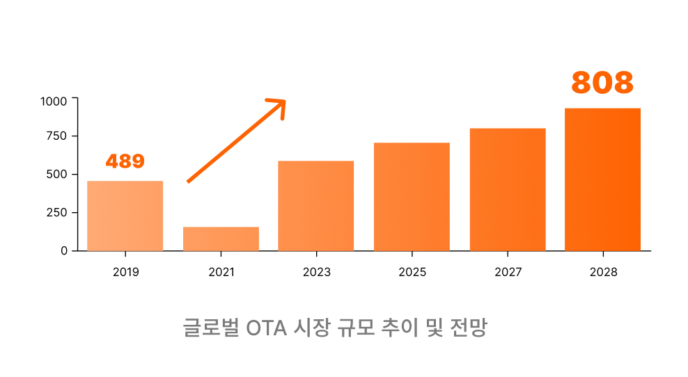
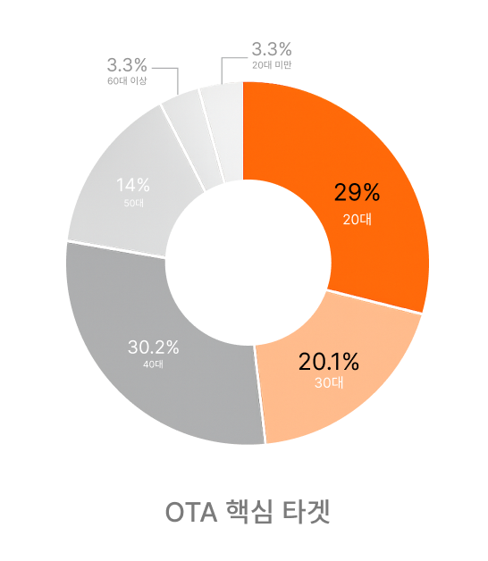
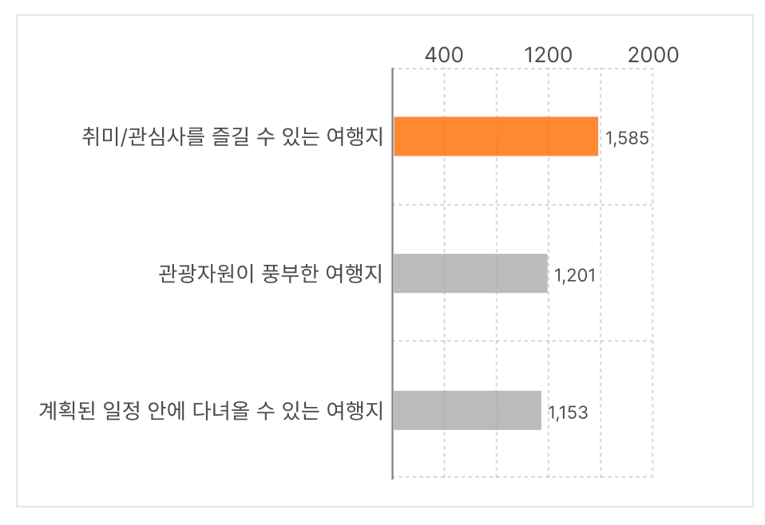
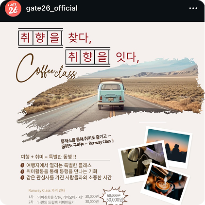
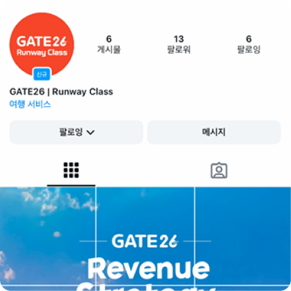
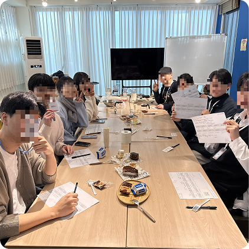
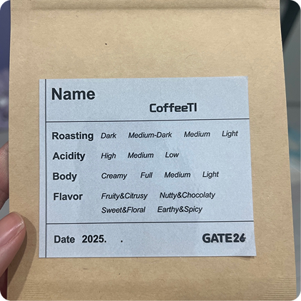

매경비즈 대외 프로젝트
OTA 신규 수익모델 기획 프로젝트
콘텐츠 소비 이후 사용자 참여로 이어지지 않는 구조적 단절
따라서 GATE26이 OTA 시장에서 차별화되기 위해서는 새로운 서비스형
상품이 필요
GATE26의 신규 수익모델 발굴을 위해 취미 기반 여행 클래스 서비스를 제안했습니다.


2030 고객은 여행에서 '정보'가 아닌 '경험'에 반응
인터레스트 트립(Interest+Trip)이 떠오르는 트렌드

여행 전-중-후 여정을 하나로 연결하는 경험형 콘텐츠 구조를 설계했습니다.
* 실제 진행했던 대표 클래스 실행 전략 과정입니다.
1, 2단계 클래스를 실제 운영했으며,
이라는 평가를 받으며 대상을 수상했습니다.
🏆매경비즈 대상 수상



* 클래스 실제 운영 현장을 담당했습니다.
매경비즈 프로젝트는 팀원들이 모두 다른 지역에 거주해 줌 회의로 진행됐습니다. 오전에 제주항공 팀 회의를 마친 뒤 이어서 장시간 회의를 진행하는 일정이였기 때문에, 매번 짧은 시간 안에 최대한 밀도 있게 논의를 끝내는 것이 관건이었습니다. 그래서 매 회의 전 안건을 미리 정리해 공유하고, 회의 중에는 결론이 필요한 부분과 추가 조사가 필요한 부분을 구분해 진행 속도를 조절하려 노력했습니다. 이런 방식 덕분에 5개월이라는 기간 동안 여러 일정 변수에도 불구하고 클래스 기획부터 실제 운영까지 프로젝트 를 끝까지 완주할 수 있었고, 좋은 피드백까지 받을 수 있었습니다.
다시 한다면 회의 운영 방식과 자료 정리 방식을 더 체계적으로 가져가고 싶습니다. 초반에는 팀원들과 서로 낯설어 의견을 모으는 데 시간이 걸렸고, 회의가 길어지는 경우도 있었습니다. 이후에는 바로 결정할 수 있는 부분은 그 자리에서 바로 정리하고, 추가 논의가 필요한 안건만 다음 회의로 넘기는 방식으로 진행하고 싶습니다.
이 활동을 통해 아이디어를 발상하고 성과 지표까지 연결하는 과정을 배웠습니다. 처음 아이디어 회의 때는 타겟과 상품을 명확히 정의하지 못해 방향성이 흐려진 적이 있었습니다. 이후 문제 상황, 실행 가능성, 수익 모델을 순차적으로 검토하는 습관을 들였고, 이 경험은 실무형 아이디어를 확장하는 데 큰 도움이 되었습니다. 여러 안 중 우선순위를 매기고, 하나의 프로젝트를 처음부터 끝까지 주도적으로 이끌어가는 능력을 키운 경험이었습니다.